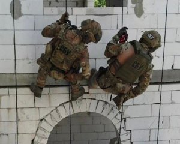

Звільнення Харківщини.

Українські захисники продовжують звільняти раніше окуповану територію Харківської області.
Ворог зазнає "великих втрат". Про це повідомив голова обласної військової адміністрації Олег Синєгубов в Тelegram вранці 11 вересня.
"Збройні сили України" зайшли до Куп'янська, триває звільнення населених пунктів Куп'янського та Ізюмського районів.
За останні дні звільнено близько двох тисяч квадратних кілометрів нашої території", – написав Синєгубов.
Він також нагадав, що сьогодні виповнюється 200 днів від початку повномасштабного російського вторгнення в Україну/
Окупанти не припиняють тероризувати Харківщину. Водночас у ніч на 11 вересня обстрілів Харкова не зафіксували, били окупанти по області.
Читайте також:
"Як гарматне м'ясо" – біля Балаклії знайшли передсмертну записку бойовика терористичної ЛНР
"Близько опівночі завдали ракетного удару, попередньо зенітно-ракетного комплексу С-300, по місті Дергачі.
Пошкоджено чотириповерхову будівлю. Ніхто не постраждав", – додав голова ОВА.
Минулої доби, 10 вересня, ворог інтенсивно обстрілював Харків та населені пункти Харківського,
Чугуївського, Куп'янського та Ізюмського районів. Є загиблі та поранені серед мирних людей.
"Внаслідок вчорашніх обстрілів Харкова загинув 43-річний чоловік, госпіталізовані з пораненнями ще четверо цивільних.
В Чугуївському районі поранення отримали двоє людей. В Ізюмському районі один поранений.
Ще двоє людей госпіталізовані в Куп'янському районі", – додав чиновник.
Загальні бойові втрати* росіян
- особового складу – близько 52 650 осіб (приблизно +400 за попередню добу);
- танків – 2 154 (+18);
- бойових броньованих машин (ББМ) – 4617(+33);
- артилерійських систем – 1 263 (+4);
- реактивних систем залпового вогню (РСЗВ) – 311 (+0);
- літаків – 242 (+3);
- гелікоптерів – 213 (+1);
- крилатих ракет – 216 (+1);
1300 км — довжина лінії фронту в Україні
Про цю цифру українцям чергове нагадав Володимир Зеленський у своєму вечірньому
зверненні 6 вересня, закликавши віддати належну шану зусиллям ЗСУ вздовж усього фронту,
а не лише на ділянках контрнаступу.
«Будь ласка, звертайте свою увагу й увагу суспільства на те, що жорстке протистояння триває майже по всій лінії фронту.
Це 1300 кілометрів активних бойових дій.
І це просто несправедливо, коли про окремі ділянки фронту говорять дуже багато, а про інші ніби забувають.
Хоча наші воїни на багатьох напрямках — абсолютні молодці, абсолютні герої.
І на Донбасі, і на Харківщині, і в Запорізькій області, і на півдні, і в прикордонних районах півночі та сходу країни.
Захист усієї держави потребує однаково щирої та серйозної уваги», — наголосив Зеленський.
- танк 1
- танк 1.1
- танк 1.2
- танк 1.3
- танк 1.4
- танк 2
- танк 3
- танк 4
- танк 5
«Розгортання ефективного супротиву більш як 300-тисячному угрупованню ЗС РФ
потребувало мобілізації до ЗС України сотень тисяч людей і оснащення їх десятками тисяч зразків військової техніки.
А щоденні витрати боєприпасів ЗС України, наприклад, артилерійських снарядів з розрахунку на одну гармату,
в середньому втричі перевищують показники Королівської артилерії Британської армії в часи Першої світової війни.
З урахуванням тривалості війни і перспектив на кампанію 2023 року, навряд чи ці
показники будуть зменшуватись», — наголосив Залужний.
- Літак
- Літак
- Літак
- Літак
- Літак